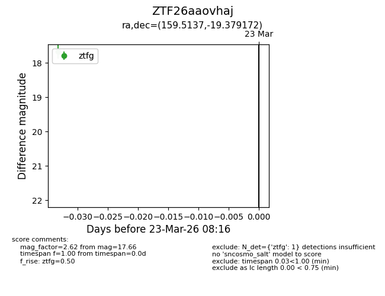
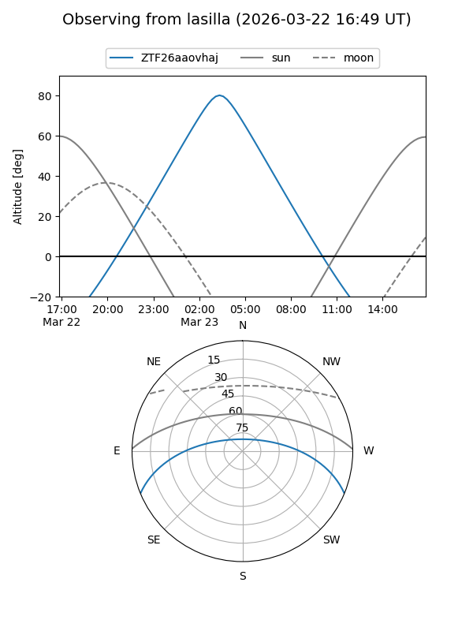
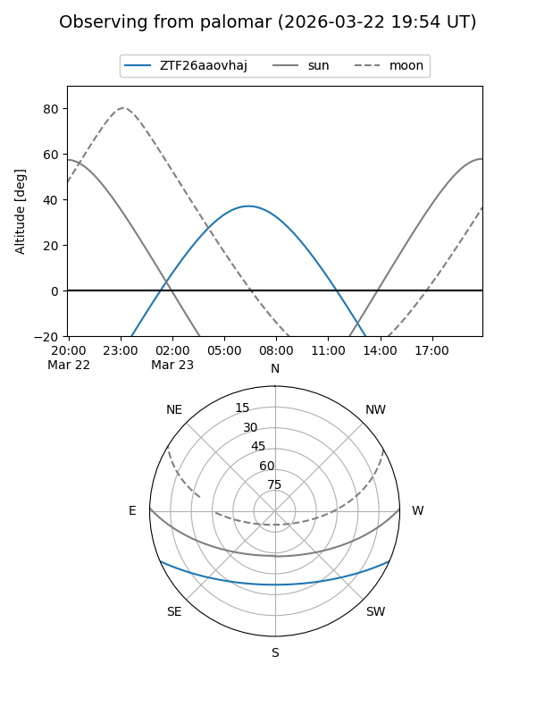

ZTF26aaovhaj
Target ZTF26aaovhaj at 2026-03-23 08:18
Aliases and brokers:
FINK: link
Lasair: link
ALeRCE: link
alt names
ZTF26aaovhaj (ztf,fink_ztf)
Coordinates:
equatorial (ra, dec) = 159.5137,-19.37917
equatorial (HMS+DMS) = 10:38:03.28,-19:22:45.02
galactic (l, b) = (264.5491,+33.36987)
Flags:
Photometry:
last ztfg=17.66
1 ztfg detections
Lightcurve

Visibility


Additional plots